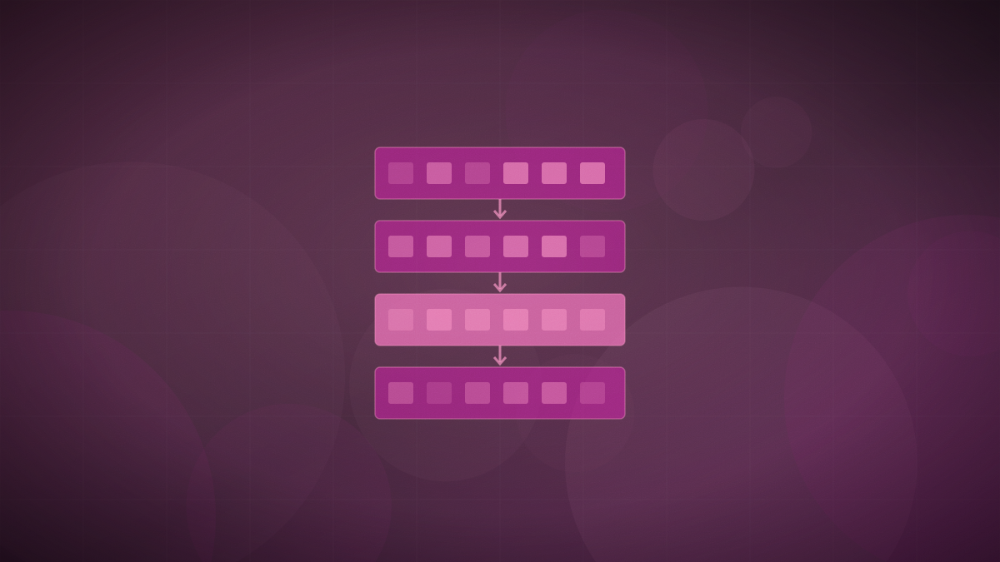

Frontier models
xAI ships Grok 4.6, matching GPT-5.6 Sol on Artificial Analysis's intelligence index
The update keeps Grok 4.5's base model and 500,000-token context, spending the gains on longer training for agentic and knowledge-work tasks rather than a larger model.

Original cover art, generated for this story. THE VISSION does not republish third-party press imagery.
The short version
- xAI released Grok 4.6, a post-training update to Grok 4.5 focused on long-running agentic tasks and knowledge work, at $2 per million input tokens and $6 per million output tokens.
- The model matches GPT-5.6 Sol at a score of 61 on the Artificial Analysis Intelligence Index, and xAI reports it leads that model on several knowledge-work benchmarks, including CursorBench 3.2 at 69.9%.
- The company says the gains came from a longer supplemental training run and reinforcement learning in agentic environments, not a larger base model.
The update keeps Grok 4.5's base model and 500,000-token context, spending the gains on longer training for agentic and knowledge-work tasks rather than a larger model.